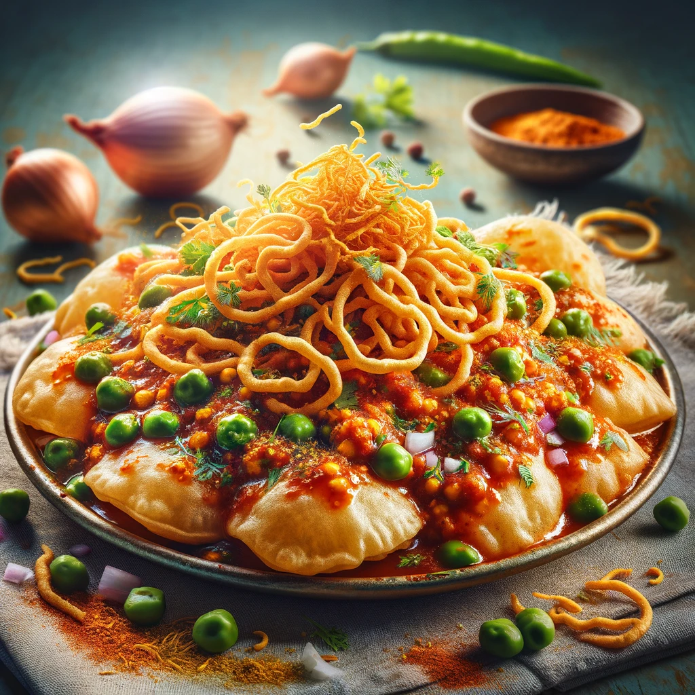

Menu
Masala Puri - Spicy, Flavorful, and Irresistible!

Masala Puri is a beloved street food in India, known for its spicy and tangy flavors.
It's a delicious snack where puris are topped with a spicy masala, tamarind chutney, and garnishes.
Ingredients
- Puris
- Peas
- Tamarind chutney
- Sev
- Onion, finely chopped
- Coriander leaves, chopped
- Chaat masala
- Red chili powder
- Salt to taste
Steps
- Prepare the spicy peas masala.
- Arrange puris on a plate and create a small opening in the center of each.
- Fill each puri with the peas masala.
- Top with tamarind chutney, onion, sev, and coriander leaves.
- Sprinkle chaat masala, red chili powder, and salt to taste.
- Serve immediately and enjoy!